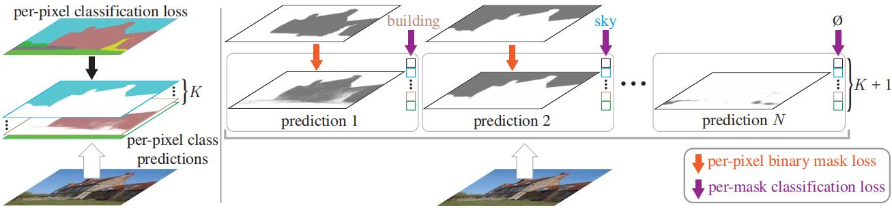

Maskformer¶
综述¶
会议时间：Advances in Neural Information Processing Systems, 2021 (NIPS, 2021)
论文地址：http://proceedings.neurips.cc/paper/2021/file/950a4152c2b4aa3ad78bdd6b366cc179-Paper.pdf
介绍¶
传统的语义分割算法大部分都是基于像素点做分类的算法，如下图左侧所示，利用分类损失对每个像素点做优化，将语义分割任务简化为分类任务。本文所提出的算法为掩模分类（mask classification）方法，如下图右侧所示，网络首先预测出一组二值掩码，每个掩码都代表一个实例区域，之后再针对每个掩码做分类操作，判断该实例属于哪个类别，该方法可以统一解决语义级分割(semantic-level segmentation)和实例级分割(instance-level segmentation)任务。

实现方法与DETR类似，核心思想为预设N个查询向量，之后利用预设的向量做解码，得到N组掩码和类别。网络主要由三部分组成：①像素模块（pixel-level module）；②TF模块（transformer module）；③分割模块（segmentation module），算法结构图如下图所示：
像素模块（pixel-level module）
主要由两个模块构成：
- backbone：可以是标准的ResNet网络，也可以是Swin-Transformer网络，主要用于对图像做编码，提取特征；
- pixel decoder：可以使用常见的上采样算法执行解码，同时也可以添加ASPP、PSP模块来提高感受野，捕获跨位置的信息，但是TF模块本来就有捕获全局信息的能力，因此不用添加额外的模块。本文作者参考FPN模块，添加了横向连接操作来实现上采样，对于每次解码，首先利用1*1的卷积将特征图通道数压缩为256，之后利用上采样操作将深层的特征图放大两倍，再与浅层特征相加，最后经过一次3*3的卷积做特征融合（每次卷积都会经过一次GN和ReLU）。pixel decoder会将步幅为32的特征图解码为步幅为4的特征图，解码最后会经过一次1*1的卷积得到像素编码（per-pixel embeddings），通道数为256（这里要和下面分割模块输出的掩模编码特征维度对应起来，后面输出的掩模编码特征维度出现变化，这里就要改变）。
注：由于解码特征步幅为4，尺寸为原图尺寸的四分之一，因此输出的掩模也是原图的四分之一，需要利用双线性插值操作将输出的掩模图放大4倍，再计算损失。
TF模块（transformer module）
这里使用的解码模块和DETR中的解码模块结构一样（包括多头注意力中QKV的传入方式），其中编码特征使用来自backbone最后一个阶段的特征图，并且预设100个查询向量，使用6个TF解码模块。
补：首先让预设的查询向量做自注意力操作，将查询向量与解码特征传入多头注意力，其中q、k元素传入查询向量与解码特征相加后的数据，v传入解码特征。之后再将所得数据传入多头注意力中，q传入解码特征与物体查询向量相加，k传入编码特征与位置编码相加，v传入编码特征。特征经过六组解码模块之后，会得到尺寸为(N,256)的解码特征，再将此特征传入预测头，可以得到物体类别以及边界框坐标数据。
分割模块（segmentation module）
主要由多层感知机构成。对于掩模类别预测，将TF解码特征传入含有一个隐藏层的MLP做分类，并且将结果传入Softmax层做归一化，输出K+1个预测分数（K个类别，1个表示\phi，即无目标，舍去该掩码）；对于二值掩模预测，将TF解码特征传入含有两个隐藏层的MLP做预测，输出一组掩模编码特征（mask embedding），特征维度要和pixel decoder输出的特征图通道数相同，之后再将所得的掩模编码特征与解码特征图做矩阵乘法运算，得到N组预测掩模，之后再经过一次sigmoid运算做归一化。
损失函数
对于二值掩模图预测的优化，使用focal loss和dice loss（focal loss权重设为20.0，dice loss权重设为1.0），对于掩模图类别预测的优化，使用交叉熵损失函数。对于查询向量的标签匹配，使用和DETR中相同的匹配规则，先计算损失矩阵，之后利用匈牙利算法做匹配。
推理过程
- 对于语义推理：首先删掉∅对应类别的预测分数，之后让尺寸为[N,K]的掩模类别预测分数与尺寸为[N,H,W]的二值掩模预测做矩阵乘法（类别分数先转置），得到尺寸为[K,H,W]的预测图，之后沿通道方向选取数值最大的索引序号，当做该点的类别；
- 对于全景推理（既要预测语义、也要给出实例）：先删掉预测为∅的掩模，以及最大预测分数仍过小的掩模（有个阈值），之后让每个掩模的类别预测分数与二值掩模的前景分数做点乘，得到综合分数，每个点上，最大的综合分数所对应的类别即为该点的预测类别，即每个点的类别可视为：arg\max_{i:c_i\ne \phi}p_i(c_i)。通俗地来讲就是只有当类别预测分数与二值掩模上的前景预测分数都很大时，该点才可以视为一个实例点。
注：推理过程batch要设为1
参考链接：
代码实现¶
问题记录：全景分割，怎么判断一个物体是否属于可数物体还是不可数物体。在前面已经删去了∅类别，剩下的掩模的类别归属应该都是预设好的类别吧，那如果只判断当前类别是否属于预设好的，那么所有的掩模所代表的物体岂不都是可数类别的物体了？
参考代码：
整体结构¶
class MaskFormer(nn.Module):
def __init__(self, model_config):
super(MaskFormer, self).__init__()
# 初始化模块
self.backbone = Swin_transformer(
patch_size=model_config["backbone_patch_size"],
window_size=model_config["backbone_window_size"],
merge_size=model_config["backbone_merge_size"],
model_dim=model_config["backbone_model_dim"],
num_layers_in_stage=model_config["backbone_num_layers_in_stage"]
)
in_channels = list(model_config["backbone_model_dim"] * 2 ** i for i in
range(len(model_config["backbone_num_layers_in_stage"])))[::-1]
self.pixel_decoder = Pixel_decoder(
in_channels=in_channels,
channels=model_config["pixel_decoder_channels"],
n_groups=model_config["pixel_decoder_n_groups"]
)
in_channels = model_config["backbone_model_dim"] * 2 ** (len(model_config["backbone_num_layers_in_stage"]) - 1)
self.transformer_decoder = Transformer_decoder(
nhead=model_config["transformer_decoder_num_head"],
dropout=model_config["transformer_decoder_dropout"],
num_decoder_layers=model_config["transformer_decoder_num_layer"]
)
self.segmentation_module = Segmentation_module(
n_class=model_config["segmentation_module_num_class"],
in_channels=model_config["segmentation_module_in_channels"],
out_channels=model_config["segmentation_module_out_channels"]
)
n_query = model_config["transformer_decoder_num_query"]
d_model = model_config["transformer_decoder_dimension"]
feature_size = model_config["transformer_decoder_positional_size"]
self.query_embed = nn.Parameter(torch.rand(n_query, d_model))
self.pos_embed = nn.Parameter(torch.randn(1, feature_size[0] * feature_size[1], d_model))
# 预设一个1*1的卷积，将编码特征通道数压缩为d_model，之后便于传入TF解码模块
self.conv_pre = nn.Conv2d(in_channels, d_model, kernel_size=1)
self.object_mask_threshold = 0.5
self.overlap_threshold = 0.0
def forward(self, x):
# 返回一组特征，以res50为例，返回["res2", "res3", "res4", "res5"]
# 便于后续利用多组特征做FPN特征融合
features = self.backbone(x)
# 特征图做解码，通道数变为256，尺寸放大3次(变为原来的8倍)
# 结构参考FPN结构，每做一次上采样都和前面的解码特征做一次融合（相加）
pixel_feature = self.pixel_decoder(features)
b, C, H, W = pixel_feature.shape
# 将最后一层的编码特征传入TF解码器中，结合预设的N个查询实例向量做解码，得到解码特征
mask_embedded_vecs = self.transformer_decoder(self.conv_pre(features['stage4']),
query_embed=self.query_embed, pos_embed=self.pos_embed)[0]
# 利用最后一层的解码特征做预测
mask_embedded_vec = mask_embedded_vecs[-1]
# 解码特征依次传入两组MLP，得到掩模向量和分类结果
segmentation_mask_vecs, classification_vecs = self.segmentation_module(mask_embedded_vec)
# 掩模向量和解码特征做矩阵乘法，得到预测的二值掩模
segmentation_mask = torch.matmul(segmentation_mask_vecs, pixel_feature.view(b, C, -1)).view(b, -1, H, W)
segmentation_mask = F.sigmoid(segmentation_mask)
result = {}
result["pred_masks"] = segmentation_mask
result["pred_logits"] = classification_vecs
return result
特征解码¶
class Pixel_decoder(nn.Module):
def __init__(
self,
in_channels: list = [96 * 8, 96 * 4, 96 * 2, 96],
channels: int = 256,
mask_dim: int = 256,
n_groups: int = 16
):
super(Pixel_decoder, self).__init__()
self.num_stage = len(in_channels)
self.from_encoder_projection_list = nn.ModuleList([])
self.from_feature_projection_list = nn.ModuleList([])
# 第一个layer不需要对来自encoder的feature进行projection.
for i, in_channel in enumerate(in_channels):
if i == 0:
from_feature_projection = nn.Sequential(
nn.Conv2d(in_channel, channels, kernel_size=3, stride=1, padding=1),
nn.GroupNorm(n_groups, channels),
nn.ReLU()
)
self.from_encoder_projection_list.append(None)
self.from_feature_projection_list.append(from_feature_projection)
else:
from_feature_projection = nn.Sequential(
nn.Conv2d(channels, channels, kernel_size=3, stride=1, padding=1),
nn.GroupNorm(n_groups, channels),
nn.ReLU()
)
from_encoder_projection = nn.Sequential(
nn.Conv2d(in_channel, channels, kernel_size=1, stride=1),
nn.GroupNorm(n_groups, channels)
)
self.from_encoder_projection_list.append(from_encoder_projection)
self.from_feature_projection_list.append(from_feature_projection)
self.final_projection = nn.Conv2d(channels, mask_dim, kernel_size=1, stride=1)
def forward(self, features):
'''
features : dict keys : stage1, stage2, stage3, stage4
'''
# 解码操作，将16*16特征图解码3次，变为128*128的特征图
# 结构参考FPN结构，每做一次上采样都和前面的解码特征做一次融合（相加）
feature = self.from_feature_projection_list[0](features['stage4'])
for i, (encoder_projection, feature_projection) in enumerate(
zip(self.from_encoder_projection_list[1:], self.from_feature_projection_list[1:])):
# 先将前一个特征图通道数压缩，之后将后一个特征图尺寸变为两倍，相加
feature = encoder_projection(features['stage' + str(3 - i)]) + F.interpolate(feature, scale_factor=2,
mode="nearest")
# 经过一组卷积模块
feature = feature_projection(feature)
# 最后经过一次1*1的卷积，将通道数变为解码特征的通道数
return self.final_projection(feature)
TF解码¶
解码过程中，自注意力和多头注意力QKV的传入规则和DETR一样：首先查询向量做自注意力操作，将查询向量与解码特征传入多头注意力，其中q、k元素传入目标查询向量与解码特征相加后的数据，v传入解码特征。之后再将所得数据传入Transformer模块中，流程与Transformer解码模块类似，多头注意力中，q传入解码特征与物体查询向量相加，k传入编码特征与位置编码相加，v传入编码特征。
代码实现和DETR中的TF解码模块一致：
class Transformer_decoder(nn.Module):
def __init__(self, nhead=8, d_model=256, d_ff=512,
dropout=0.1, num_decoder_layers=6, activation='relu',
normalize_before=False):
super().__init__()
decoder_layer = TransformerDecoderLayer(
d_model, nhead, d_ff, dropout, activation, normalize_before
)
decoder_norm = nn.LayerNorm(d_model)
self.decoder = TransformerDecoder(
decoder_layer,
num_decoder_layers,
decoder_norm,
return_intermediate=True
)
def forward(self, memory, query_embed, pos_embed, mask=None):
# flatten NxCxHxW to HWxNxC
bs, c, h, w = memory.shape
memory = memory.flatten(2).permute(2, 0, 1)
pos_embed = pos_embed.flatten(2).permute(2, 0, 1)
query_embed = query_embed.unsqueeze(1).repeat(1, bs, 1)
if mask is not None:
mask = mask.flatten(1)
tgt = torch.zeros_like(query_embed)
hs = self.decoder(
tgt, memory, memory_key_padding_mask=mask, pos=pos_embed, query_pos=query_embed
)
return hs.transpose(1, 2), memory.permute(1, 2, 0).view(bs, c, h, w)
class TransformerDecoderLayer(nn.Module):
def __init__(
self,
d_model,
nhead,
dim_feedforward=2048,
dropout=0.1,
activation="relu",
normalize_before=False,
):
super().__init__()
self.self_attn = nn.MultiheadAttention(d_model, nhead, dropout=dropout)
self.multihead_attn = nn.MultiheadAttention(d_model, nhead, dropout=dropout)
# Implementation of Feedforward model
self.linear1 = nn.Linear(d_model, dim_feedforward)
self.dropout = nn.Dropout(dropout)
self.linear2 = nn.Linear(dim_feedforward, d_model)
self.norm1 = nn.LayerNorm(d_model)
self.norm2 = nn.LayerNorm(d_model)
self.norm3 = nn.LayerNorm(d_model)
self.dropout1 = nn.Dropout(dropout)
self.dropout2 = nn.Dropout(dropout)
self.dropout3 = nn.Dropout(dropout)
self.activation = _get_activation_fn(activation)
self.normalize_before = normalize_before
def with_pos_embed(self, tensor, pos: Optional[Tensor]):
return tensor if pos is None else tensor + pos
def forward(
self,
tgt,
memory,
tgt_mask: Optional[Tensor] = None,
memory_mask: Optional[Tensor] = None,
tgt_key_padding_mask: Optional[Tensor] = None,
memory_key_padding_mask: Optional[Tensor] = None,
pos: Optional[Tensor] = None,
query_pos: Optional[Tensor] = None,
):
q = k = self.with_pos_embed(tgt, query_pos)
tgt2 = self.self_attn(
q, k, value=tgt, attn_mask=tgt_mask, key_padding_mask=tgt_key_padding_mask
)[0]
tgt = tgt + self.dropout1(tgt2)
tgt = self.norm1(tgt)
tgt2 = self.multihead_attn(
query=self.with_pos_embed(tgt, query_pos),
key=self.with_pos_embed(memory, pos),
value=memory,
attn_mask=memory_mask,
key_padding_mask=memory_key_padding_mask,
)[0]
tgt = tgt + self.dropout2(tgt2)
tgt = self.norm2(tgt)
tgt2 = self.linear2(self.dropout(self.activation(self.linear1(tgt))))
tgt = tgt + self.dropout3(tgt2)
tgt = self.norm3(tgt)
return tgt
def _get_activation_fn(activation):
"""Return an activation function given a string"""
if activation == "relu":
return F.relu
if activation == "gelu":
return F.gelu
if activation == "glu":
return F.glu
raise RuntimeError(f"activation should be relu/gelu, not {activation}.")
def _get_clones(module, N):
return nn.ModuleList([copy.deepcopy(module) for i in range(N)])
class TransformerDecoder(nn.Module):
def __init__(self, decoder_layer, num_layers, norm=None, return_intermediate=False):
super().__init__()
self.layers = _get_clones(decoder_layer, num_layers)
self.num_layers = num_layers
self.norm = norm
self.return_intermediate = return_intermediate
def forward(
self,
tgt,
memory,
tgt_mask: Optional[Tensor] = None,
memory_mask: Optional[Tensor] = None,
tgt_key_padding_mask: Optional[Tensor] = None,
memory_key_padding_mask: Optional[Tensor] = None,
pos: Optional[Tensor] = None,
query_pos: Optional[Tensor] = None,
):
output = tgt
intermediate = []
for layer in self.layers:
output = layer(
output,
memory,
tgt_mask=tgt_mask,
memory_mask=memory_mask,
tgt_key_padding_mask=tgt_key_padding_mask,
memory_key_padding_mask=memory_key_padding_mask,
pos=pos,
query_pos=query_pos,
)
if self.return_intermediate:
intermediate.append(self.norm(output))
if self.norm is not None:
output = self.norm(output)
if self.return_intermediate:
intermediate.pop()
intermediate.append(output)
if self.return_intermediate:
return torch.stack(intermediate)
return output.unsqueeze(0)
标签匹配¶
class HungarianMatcher(nn.Module):
def __init__(self, w_class: float = 1, w_focal: float = 1, w_dice: float = 1):
super().__init__()
# 计算总损失矩阵时，所用的权重
self.w_class = w_class
self.w_focal = w_focal
self.w_dice = w_dice
@torch.no_grad()
def dice_cost(self, predict, target):
# predict : b * n_queries, h * w
# target : b * n_obj, h * w
numerator = 2 * (predict[:, None, :] * target[None, :, :]).sum(-1)
denominator = predict.sum(-1)[:, None] + target.sum(-1)[None, :]
cost_dice = 1 - (numerator + 1) / (denominator + 1)
return cost_dice
@torch.no_grad()
def focal_cost(self, predict, target, gamma=2., alpha=0.25):
# predict : b * n_queries, h * w
# target : b * n_obj, h * w
predict = predict[:, None, :].expand((predict.shape[0], target.shape[0], predict.shape[1]))
target = target[None, :, :].expand((predict.shape[0], target.shape[0], target.shape[1]))
ce = F.binary_cross_entropy_with_logits(predict, target, reduction='none')
p_t = predict * target + (1 - predict) * (1 - target)
focal_cost = ce * ((1 - p_t) ** gamma)
alpha_t = alpha * target + (1 - alpha) * (1 - target)
focal_cost = alpha_t * focal_cost
return focal_cost.mean(-1)
@torch.no_grad()
def forward(self, out, targets):
# 先提取预测值和标签数据
pred_logits = out["pred_logits"] # b, n, class + 1
pred_masks = out["pred_masks"] # b, n, h, w
target_logits = targets["labels"] # [ m_i for i in b]
target_masks = targets["masks"] # [ m_i, h, w for i in b]
bs, num_queries = pred_logits.shape[:2]
device = pred_logits.device
# 将预测数据拉直，out_prob:[batch_size * num_queries, num_classes + 1]
# out_mask:[batch_size * num_queries, h * w]
out_prob = pred_logits.flatten(0, 1).softmax(-1)
out_mask = pred_masks.flatten(0, 1).flatten(1, 2)
# 将标签数据拉直，tgt_ids:[batch_size * num_obj]
# tgt_mask:[batch_size * num_obj, h * w]
tgt_ids = torch.cat([v for v in target_logits])
tgt_mask = torch.cat([v for v in target_masks]).flatten(1, 2)
# 计算单独的损失矩阵，包括分类损失、dice损失、focal损失
cost_class = -out_prob[:, tgt_ids] # [batch_size * num_queries, batch_size * num_obj]
cost_dice = self.dice_cost(out_mask, tgt_mask) # [batch_size * num_queries, batch_size * num_obj]
cost_focal = self.focal_cost(out_mask, tgt_mask) # [batch_size * num_queries, batch_size * num_obj]
# 合并，得到总损失矩阵
C = self.w_dice * cost_dice + self.w_class * cost_class + self.w_focal * cost_focal
C = C.view(bs, num_queries, -1).cpu() # [batch_size, num_queries, batch_size * num_obj]
# linear_sum_assignment调用匈牙利算法，得到总损失最小的匹配结果，为每个查询向量加标签
sizes = [len(v) for v in target_masks]
indices = [linear_sum_assignment(c[i]) for i, c in enumerate(C.split(sizes, -1))]
result = []
for i, j in indices:
i = torch.as_tensor(i, dtype=torch.int64, device=device)
j = torch.as_tensor(j, dtype=torch.int64, device=device)
result.append(i[j])
return result
损失计算¶
class Maskformer_loss(nn.Module):
def __init__(self, w_focal: float = 1., w_dice: float = 1., w_class: float = 1., w_noobj: float = 1.):
super(Maskformer_loss, self).__init__()
# 损失权重
self.w_class = w_class
self.w_focal = w_focal
self.w_dice = w_dice
# ∅类别计算交叉熵时，对应的权重
self.w_noobj = w_noobj
def class_loss(self, pred_logits, target_logits, match_indexs):
device = pred_logits.device
target_labels = torch.zeros(pred_logits.shape[:2], dtype=torch.int64, device=device)
cost_no_obj = torch.ones(pred_logits.shape[2], device=device)
cost_no_obj[0] *= self.w_noobj
# 被匹配到的向量归为前景，并且赋值前景类别
for i, match_index in enumerate(match_indexs):
target_labels[i, match_index] = target_logits[i]
class_loss = F.cross_entropy(pred_logits.flatten(0, 1), target_labels.flatten(0, 1), cost_no_obj)
return class_loss
def focal_loss(self, predict, target, gamma=2.0, alpha=0.25):
# predict : b * n_queries, h * w
# target : b * n_obj, h * w
ce = F.binary_cross_entropy_with_logits(predict, target, reduction='none')
p_t = predict * target + (1 - predict) * (1 - target)
focal_cost = ce * ((1 - p_t) ** gamma)
alpha_t = alpha * target + (1 - alpha) * (1 - target)
focal_loss = alpha_t * focal_cost
return focal_loss.mean()
def dice_loss(self, predict, target):
numerator = 2 * (predict * target).sum(-1)
denominator = predict.sum(-1) + target.sum(-1)
loss_dice = 1 - (numerator + 1) / (denominator + 1)
return loss_dice.mean()
def forward(self, out, targets, match_indexs):
pred_logits = out["pred_logits"] # b, n, class + 1
pred_boxes = out["pred_masks"] # b, n, h, w
target_logits = targets["labels"] # [ m_i for i in b]
target_boxes = targets["masks"] # [ m_i, h, w for i in b]
tgt_mask = torch.cat([v for v in target_boxes]).flatten(1, 2) # [batch_size * num_obj, h * w]
out_mask = pred_boxes.flatten(2) # [batch_size, num_queries, h * w]
# 筛选被匹配到的预测数据
out_mask = torch.cat([out_mask[i, match_index, :] for i, match_index in
enumerate(match_indexs)]) # [batch_size * num_obj, h * w]
# 计算分类损失，未被匹配到的数据统一划分为∅类别
class_loss = self.class_loss(pred_logits, target_logits, match_indexs) * self.w_class
focal_loss = self.focal_loss(out_mask, tgt_mask) * self.w_focal
dice_loss = self.dice_loss(out_mask, tgt_mask) * self.w_dice
return class_loss + focal_loss + dice_loss
推理过程¶
def semantic_inference(self, mask_cls, mask_pred):
# mask_cls = F.softmax(mask_cls, dim=-1)[..., :-1]
# 删掉第一个类别，和官方给的源码不太一样，但是都表示删除∅类别
mask_cls = F.softmax(mask_cls, dim=-1)[..., 1:]
mask_pred = mask_pred.sigmoid()
# semseg尺寸为[num_classes, h, w]
semseg = torch.einsum("bqc,bqhw->bchw", mask_cls, mask_pred)
# 后续再沿通道方向选取数值最大的索引，当做类别序号
return semseg
def panoptic_inference(self, mask_cls, mask_pred):
mask_cls = torch.randn_like(mask_cls)
scores, labels = F.softmax(mask_cls, dim=-1).max(-1)
mask_pred = mask_pred.sigmoid()
# # 把最后一个类别序号当做空类别
# keep = labels.ne(self.num_classes) & (scores > self.object_mask_threshold)
# 第一个序号当做空类别，删掉空类别。并且删去类别分数最大值还小于object_mask_threshold的掩模
keep = labels.ne(0) & (scores > self.object_mask_threshold)
cur_scores = scores[keep]
cur_classes = labels[keep]
cur_masks = mask_pred[keep]
# 类别分数与二值掩模分数相乘，得到综合分数
cur_prob_masks = cur_scores.view(-1, 1, 1) * cur_masks
h, w = cur_masks.shape[-2:]
panoptic_seg = torch.zeros((h, w), dtype=torch.int32, device=cur_masks.device)
segments_info = []
current_segment_id = 0
if cur_masks.shape[0] == 0:
# We didn't detect any mask :(
return panoptic_seg, segments_info
else:
# 沿通道方向（即类别方向），得到每个位置上综合分数最大的查询索引
# 用于判断该点上的100个输出中，哪个输出属于该点
cur_mask_ids = cur_prob_masks.argmax(0)
stuff_memory_list = {}
# 按类别非空的掩模图遍历，
for k in range(cur_classes.shape[0]):
pred_class = cur_classes[k].item()
# isthing用于判断物体是否是可数目标，若为True，则说明物体可数。如何判断？
# isthing = pred_class in self.metadata.thing_dataset_id_to_contiguous_id.values()
isthing = pred_class in [i for i in range(self.num_classes)]
# 判断当前掩模图的序号是否等于综合分数最大值时的对应的输出序号
mask = cur_mask_ids == k
# 并且提取区域面积
mask_area = mask.sum().item()
original_area = (cur_masks[k] >= 0.5).sum().item()
# 面积大于零，说明当前掩模图存在一些点是前景
if mask_area > 0 and original_area > 0:
# self.overlap_threshold用于限制一个实例最小占比多少
if mask_area / original_area < self.overlap_threshold:
continue
# 不可数的分支，即背景区域（如天空、地面）
if not isthing:
if int(pred_class) in stuff_memory_list.keys():
panoptic_seg[mask] = stuff_memory_list[int(pred_class)]
continue
else:
stuff_memory_list[int(pred_class)] = current_segment_id + 1
# 如果可数，则视为前景区域，实例数加一
current_segment_id += 1
panoptic_seg[mask] = current_segment_id
segments_info.append(
{
"id": current_segment_id,
"isthing": bool(isthing),
"category_id": int(pred_class),
}
)
return panoptic_seg, segments_info
注：以上仅是笔者个人简介，若有问题，欢迎指正
初步完稿于：2023年5月1日